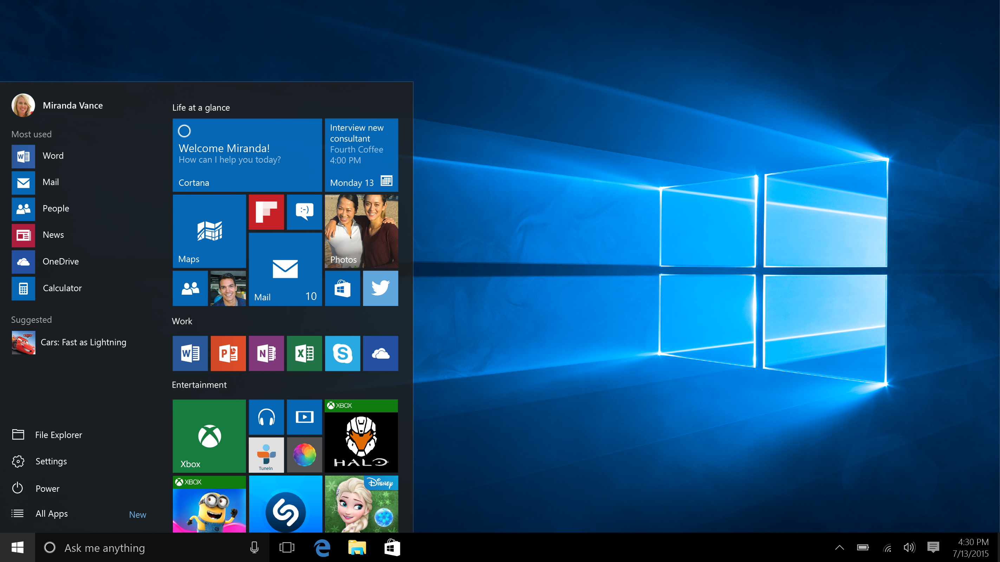

About
Released: 2015
Windows 10 was designed to unify the Windows experience across many types of devices while restoring familiar features that users missed in previous versions. It marked a return to a more traditional desktop experience after the major changes introduced in Windows 8.
Rather than completely redefining the interface, Windows 10 focused on refinement, usability, and long–term stability.
Key Features
- Return of the Start Menu
- Combination of classic desktop and modern elements
- Improved performance and reliability
- Regular system updates
Windows 10 aimed to balance familiarity with modern design needs.
Design Philosophy
The design philosophy of Windows 10 emphasized simplicity and consistency. Visual elements were streamlined to reduce clutter, while subtle shadows and spacing helped organize information clearly.
The interface was designed to feel neutral and adaptable, working across different screen sizes and user preferences.
Impact
Windows 10 had a lasting impact on interface design by restoring familiar navigation while introducing a more consistent and refined visual system. Its focus on usability, stability, and gradual improvement influenced how modern operating systems evolve over time, prioritizing user feedback and long–term adaptability over drastic visual changes.
